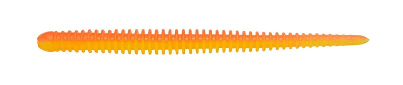
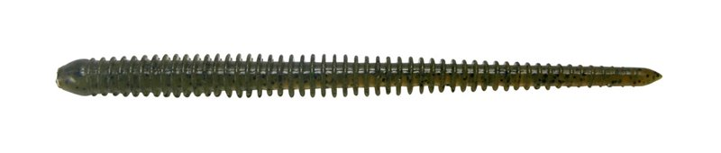
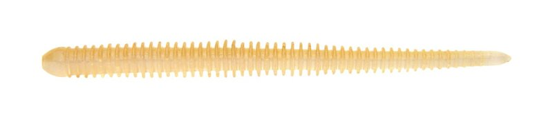
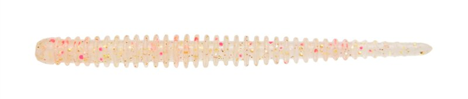
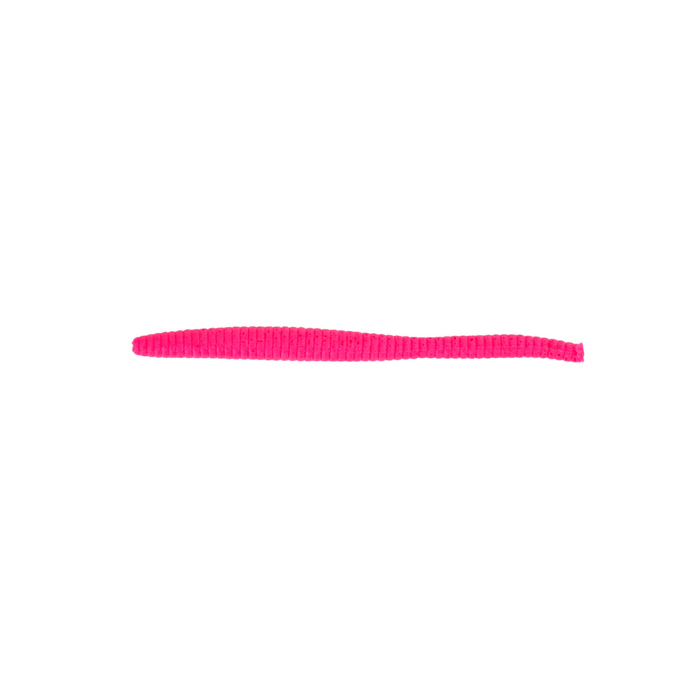

イージーシェイカー
（Easy Shaker）
イージーシェイカーは、ケイテックのストレートワームです。細いコアにリングをまとわせることで、シルエットにボリュームを持たせながら、生命体のような自然な動き“Ultimate Lifelike Action”を出せるのが最大の特徴です。
バスのフィネスはもちろん、アジングやロックフィッシュなどソルトウォーターでも効果が認められていて、ケイテックの中でも「釣れるルアーは魚種を選ばない」を地で行くワームです。

画像出典:ケイテック公式HP
スペック
- メーカー
- KEITECH（ケイテック）
- タイプ
- ストレートワーム（ノンソルティ）
- サイズ
- 2・2.5・3・3.5・4.5・5.5インチ
- 重さ（1本）
- 約0.5g（2インチ）〜約5.6g（5.5インチ）
- 入り数
- 10〜14本
- カラー
- 全26色（サイズによって違う）
- ターゲット
- バス・アジ・メバル・ロックフィッシュなど
- 価格
- 682円（税込・2〜4.5インチ）／814円（税込・5.5インチ）
▼今すぐチェック
イージーシェイカーの特徴
リングボディ＋ノンソルティ素材で、誰でも“イージー”に艶めかしく
-
ほぼ全身リングのボディ
ほぼ全身に付いたリング状のリブでシルエットを太く見せつつ、細いコアボディでしなやかに動く。ジグヘッドのスイミングでも、ダウンショットでボトムから浮かせても、トリッキーなダートや悶えるようなアクションが出る。
-
オフセットフックが使いやすい
頭から胸をやや太くして、オフセットフックを刺しやすくしている。背中とお腹のスリットで針先がリブの間に隠れ、根掛かりを減らせる。
-
水平姿勢と透明感のあるカラー
ノンソルティ素材なので、ダウンショットでマス針でもオフセットフックでも水平姿勢を保って誘い続けられる。色鮮やかで透明感のあるカラーがそろう。多くのカラーにイカ成分を配合。
イージーシェイカーの使い方
バスでは、ダウンショットリグで、ボトムから少し浮かせた状態で小さくシェイクするのが基本です。名前のとおり、軽いシェイクだけでリングボディが艶めかしく動きます。
アジングやメバリングでは、2〜2.5インチをジグヘッドに付けて、ゆっくり巻いたりフォールさせたりして使いましょう。推奨フックは、3インチがオフセット#4〜#2、3.5インチが#3〜#1、4.5インチが#2〜#2/0、5.5インチが#1/0〜#3/0です。
イージーシェイカーの得意な状況
バスでは、プレッシャーが高くて動かしすぎると食わない時のフィネスに出番です。ソルトでは、常夜灯まわりのアジやメバル、根まわりのロックフィッシュに使えます。
軽い力で生命感のある動きが出て、魚種を選ばずに食わせられるのが強み。バスでもアジでもよく釣れる、1袋持っておくと便利なワームです。
ワンポイント
アジングのジグヘッドでは、2〜3回小さくトゥイッチしてからテンションを抜いてフォールさせると、リングが水を受けてゆっくり落ち、その間にバイトが出やすくなります。夜はグロー系、澄み潮の日中はクリア系とカラーを使い分けましょう。
サイズの使い分け
| サイズ | 入り数 | 1本の |
推奨フック | こんな |
|---|---|---|---|---|
| 2インチ | 14本 | 約0.5g | ― | アジング・ |
| 2.5インチ | 14本 | 約0.7g | ― | アジングの |
| 3インチ | 13本 | 約1.2g | オフセット#4〜#2 | バスの |
| 3.5インチ | 12本 | 約1.9g | オフセット#3〜#1 | バスの |
| 4.5インチ | 10本 | 約3.3g | オフセット#2〜#2/ |
バスの |
| 5.5インチ | 10本 | 約5.6g | オフセット#1/ |
バスの |
スペックはケイテック公式HPの記載より（2025年10月1日改定後の価格）。2・2.5インチの推奨フックは公式に記載がありません。
人気カラー
イージーシェイカーの人気カラーを紹介します。

オレンジシャートリュースグロー夜のアジングで目立たせたい時に。グローで暗い場所でもアピール。

グリーンパンプキンペッパーバスの定番。どのフィールドでも使いやすい。

ワカサギワカサギや小魚を食べている時に。

シャンパンピンク澄み潮の日中や、常夜灯まわりのアジ・メバルに。
※全26色（サイズによって展開が違います）。2026年秋の新色にUVゴーストレモン・オリーブドーンがあります。
画像出典:ケイテック公式HP
▼今すぐチェック
イージーシェイカーに似ているルアー
-
 ベローズスティック2.8インチ
GEECRACK
詳細はこちら＞
ベローズスティック2.8インチ
GEECRACK
詳細はこちら＞
リブの付いた小型のストレートワーム。
-
 げっかびじん アジングビーム2.0
ダイワ
詳細はこちら＞
げっかびじん アジングビーム2.0
ダイワ
詳細はこちら＞
アジング用のストレートワームの定番。
-

フローティングライトクローラー2.5インチ バークレイ 詳細はこちら＞浮くワーム。ライトゲームで比べたい時に。